Ischemic heart disease (IHD) has been identified as a leading cause of death globally (1). Compelling evidence showed that lifestyle changes could be effective strategies for the secondary prevention of IHD (2). Therefore, to reduce the burden of IHD mortality, an efficient tool for IHD screening and early diagnosis is warranted. A machine learning algorithm that is developed with serum metabolites, cardiometabolic biomarkers, and self-reported phenotypic data is promising in simplifying the process and reducing the cost of IHD screening/diagnosis. IHD status could be accurately detected with a simple blood draw and metabolomic profiling. In this project, I aim to develop such an algorithm using data from a European population.
I will use data from the MetaCardis consortium that recruited participants aged 18-75 years from Denmark, France, and Germany (3). The data was published early this year as the supplementary material of an article on Nature Medicine (3). The original study included 372 individuals with IHD. These IHD cases were further classified into acute coronary syndrome (n = 112), chronic ischemic heart disease (n = 158), and heart failure (n = 102). With a case-control design, the study also included 3 groups of controls matched on various factors. The raw data includes 1,882 observations, including repeated records with the same participant ID but different case-control statuses.
For this project, I will use records from the 372 IHD cases and 372 controls matched on type 2 diabetes (T2D) status and body mass index (BMI). I will also extract data for age, gender, fasting plasma triglycerides, adiponectin, and CRP, systolic and diastolic blood pressure, left ventricular ejection fraction, physical activity level, and 1,513 log-transformed values of serum metabolites.
After reading in the data, I first filtered the observations to keep
the IHD cases and their controls matched by T2D status and BMI. I then
merged metabolites data with cardiometabolic biomarkers and
self-reported phenotypic data to create a main dataset with
744 rows and 1522 columns. I noticed that several participants do not
have any metabolites data and, therefore, need to be removed.
Additionally, around 30% of participants had missing values for left
ventricular ejection fraction and physical activity level. Many machine
learning techniques could not be implemented with that many missing
values, and it would also not be appropriate to replace the missing
values with any arbitrarily selected value. So, I removed these two
potential predictors from my analyses. Finally, for variables with less
than 10% missing data, I replaced the missing values with the median of
the non-missing data. The cleaned main dataset had 603 rows
and 1522 columns. The first 6 rows of the cleaned main
dataset were printed in the Appendix.
I then preprocessed the data to remove non-informative predictors with near-zero variances. Given that I planned to train at least one of my algorithms with regression, it would be better to have more predictors normally distributed so that model efficiencies could be improved. I tested the normality of each predictor with the Shapiro-Wilks Test and summarized the p-values. I found that only 101 predictors are normally distributed. It is also noteworthy that the metabolite values from the raw data were all log-transformed. Obviously, log transformation did not normalize the distributions successfully. So, I transformed all metabolite values back to the original scale and used rank-based inverse normal transformation (INT) to normalize the distributions instead. As examples, histograms showing the distributions of oleoylcarnitine (C18:1) and S-methylcysteine sulfoxide before and after the transformation were shown (Figure 1-2). I ended up having 840 predictors normalized successfully.
The outcome that my algorithm aimed to predict is the binary IHD status (non-case = 0, case = 1). Considering that I had 1,422 predictors, I would use principal component analysis (PCA) to reduce dimensions. I would keep principal components that account for at least 70% of variability as new predictors and train an algorithm with logistic regression and an algorithm with K-nearest neighbor (KNN). Given that the principal components are hard to interpret, and algorithms developed based on PCA could be difficult to implement, I would train another KNN-based algorithm with all 1,422 predictors instead. Random forest would be the 4th training method I would use. Finally, I would use an ensemble to combine the results of all four algorithms. For all algorithms, I would evaluate the overall accuracy, sensitivity, specificity, \(F_1\) score, and ROC curve. I would use a \(\beta\) of 2 to calculate the \(F_1\) score because higher sensitivity is more important than high specificity when predicting disease. In other words, a false positive will be less costly than a false negative in this scenario. I would also use cross-validation and bootstrapping to tune the model parameters.
For all the model training and fitting, I partitioned the
main dataset, which includes IHD case status and all
predictors, into a training (train_set) and a testing
(test_set) dataset. Matrices for predictors and cases were
also created. I then trained and assessed the models with the following
4 approaches: 1) Logistic regression with principal components as
predictors (PCA + Logistic); 2) K-nearest neighbors with principal
components as predictors (PCA + KNN); 3) K-nearest neighbors with serum
metabolites, cardiometabolic biomarkers, and self-reported phenotypic
data as predictors (KNN); and 4) Random forest with serum metabolites,
cardiometabolic biomarkers, and self-reported phenotypic data as
predictors (RF).
The PCA in the training set generated 483 principal components (PCs) from 1,422 predictors, including age, gender, fasting plasma triglycerides, adiponectin, and CRP, systolic and diastolic blood pressure, and 1,415 inverse normal transformed serum metabolites. After evaluating the proportion of variance explained by each PC, I selected the first 69 PCs that accounted for 70% of the total variance as new predictors. The proportion of variance explained by each of the first 69 PCs was printed in the Appendix. I fitted a logistic regression with IHD cases as the dependent variable and the 69 PCs as the independent variables. For the logistic regression, there was no model parameter to tune. To make predictions in the testing set, I used the PC rotations to transform all 1,422 predictors in the testing set into 483 PCs and kept the first 69 PCs. The logistic regression estimates were then used to predict the probability of having IHD cases in the testing set. Participants with a predicted probability of having an IHD over 0.5 were defined as predicted IHD cases.
The overall accuracy of my predicted IHD cases from the logistic regression was 0.875 with a 95% confidence interval of (0.802, 0.928). This algorithm had a sensitivity of 0.892, a specificity of 0.854, and an \(F_1\) score of 0.890. I also plotted the ROC and observed an area under the curve (AUC) of 0.946, which was very high (Figure 3).
I then used KNN to train the algorithm with the 69 PCs as predictors. To select the parameter K that maximizes the accuracy, I used 10-fold cross-validation with bootstrapping as the resampling scheme. Given that I have already reduced the dimension to 69 and we only have 603 observations, I did not worry much about the computation time of using 10-fold cross-validation. I fitted the model with K values from 2 to 100 with 20 as the increment. After plotting the accuracy under different K values, I was not able to identify a clearly optimized K, given that the curve of accuracy did not go down within the specified K range (Figure 4a). Therefore, I fitted the model with K values from 5 to 150 with 10 as the increment instead. I identified 75 as the K for the maximum accuracy and fitted the model again with this value (Figure 4b). The fitted KNN model was then used to predict the IHD cases in the testing set.
Using the combination of PCA and KNN, the overall accuracy of my predicted IHD cases was 0.842 with a 95% confidence interval of (0.764, 0.902). Compared to the algorithm developed with PCA and logistic regression, this algorithm had a higher sensitivity of 0.923, a lower specificity of 0.746, and a higher \(F_1\) score of 0.898. I plotted the ROC and observed an AUC of 0.889 (Figure 5).
The previous two algorithms developed based on selected PCs already performed well in predicting IHD cases. However, people who want to implement these two algorithms have to use the PCA rotations to transform their data first. That could increase the burden of using these algorithms, particularly in clinical settings. Also, the PCs no longer have biological meaning and, therefore, could be difficult to interpret. With these concerns, I developed another KNN-based algorithm with 1,422 predictors, including 1,415 serum metabolites.
Given that the sample size of my study is not large, I used 10-fold cross-validation with bootstrapping as the resampling scheme to select the parameter K again. I found 65 as the K that maximized the model accuracy after fitting the model with K values from 5 to 150 with 10 as the increment (Figure 6). I then fitted the model in the training set and predicted the IHD cases in the testing set. The overall accuracy of my predicted IHD cases was 0.800 with a 95% confidence interval of (0.717, 0.868). Compared to the algorithm developed with PCA and KNN, this KNN algorithm had a slightly higher sensitivity of 0.939. But the specificity dropped to 0.636. The \(F_1\) score was 0.894. I plotted the ROC and observed an AUC of 0.897 (Figure 7).
The last approach I used to train my model was random forest. It was more computationally intensive because predictors had to be randomly selected using bootstrapping to predict a single tree. To stabilize accuracy, hundreds of trees might need to be predicted. Also, I had to change the number of predictors being sampled at each bootstrap iteration to find the one that maximized the accuracy. Therefore, I started training the model with 15 trees and tuning the number of predictors to be sampled between 10 and 1000 with 100 as the increment. I implemented a 5-fold cross-validation. The plot of error against the number of trees showed that the accuracy improved as I added more trees and stabilized at around 100 trees (Figure 8a & 9a). In my second attempt, I changed the number of trees to be predicted to be 100. The plot of accuracy by the number of randomly sampled predictors did show a maximum point. However, it seems that the range of 10 to 1000 predictors was too large (Figure 8b & 9b). So, I further tuned the number of predictors to be sampled from 10 to 500 with 20 as the increment. It turned out that randomly sampling 150 predictors and predicting 100 trees maximized and stabilized the accuracy of model prediction (Figure 8c & 9c).
The overall accuracy of my predicted IHD cases from the random forest model was 0.900 with a 95% confidence interval of (0.832, 0.947). This algorithm had a high sensitivity of 0.939, a high specificity of 0.855, a high \(F_1\) score of 0.927, and a high AUC of 0.958 (Figure 10).
In this project, I aimed to develop an algorithm that uses serum metabolites, cardiometabolic biomarkers, and self-reported phenotypic data to predict ischemic heart disease (IHD) status in a European population. I obtained my data from a paper published early this year on Nature Medicine (3). For data preprocessing, I removed observations with missing metabolite measures and predictors with at least around 30% of missing data. For predictors with a small amount of missing data, I replaced the missing values with median values. Additionally, predictors with near-zero variance were also excluded. I used 4 approaches to train my model. The first two approaches used PCA to reduce dimension from 1,422 predictors. A logistic regression and a KNN-based algorithm were trained and fitted with the selected 69 PCs. The 3rd approach was also based on KNN but fitted the model with the 1,422 predictors. The last approach used random forest to develop the algorithm. I summarized the sensitivity, specificity, overall accuracy, \(F_1\) score, and AUC of all models in a table (Table 1). I also conducted an ensemble to combine results from the KNN model and random forest model and showed the performance at the end of the table. ROC curves were plotted on the same figure for comparison (Figure 11 & 12).
According to the table, the two algorithms developed with PCs had lower sensitivity than those trained with the original predictors. The KNN and random forest algorithms both had a very high sensitivity of 0.938. The two algorithms developed with KNN had lower specificity than the others. The random forest model also had a relatively high specificity of 0.855. The KNN-based algorithm with biologically meaningful predictors had the lowest overall accuracy, while the random forest model had the highest overall accuracy. The algorithms with PCs as predictors and used logistic regression for fitting had an overall accuracy of 0.875, while the one using PCs and KNN had an accuracy of 0.842. When evaluating with \(F_1\) score, the random forest model performed the best while the rest three models performed similarly. Finally, the random forest model had the highest AUC, followed by the PCA + KNN model. It is interesting that the ensemble of KNN and random forest did not further improve the model performance. In conclusion, the algorithm developed with random forest performed the best in all measures (Table 1).
My analysis that used 4 different approaches to train the algorithm is successful. I identified the random forest algorithm as the best among the 4 according to all 5 measures. The sensitivity of predicting IHD is particularly high. It is particularly important because we don’t want to miss any IHD cases if the patient really has IHD. Early detection could improve the prognosis and lower mortality. Moreover, the high sensitivity of my algorithm is not at the cost of low specificity. The specificity is also reasonably high. That could lower the probability of identifying healthy people as IHD cases and avoid overtreatment. It is also great that a random forest-based algorithm does not require extensive data transformation. Future implementation in clinical settings could be more efficient. If I had more time to spend on this project, I would look for metabolomics data in other populations and develop an algorithm that has higher generalizability.
library(tidyverse)
library(readxl)
library(caret)
library(RNOmni)
library(pROC)
library(randomForest)
library(kableExtra)
#Read in
meta <- read_excel("/Users/xgu/Documents/Harvard/Fall 2022/BST260/bst260project/41591_2022_1688_MOESM3_ESM.xlsx",
sheet = 13, skip = 1, na = "NA", col_types = "guess")
demo <- read_excel("/Users/xgu/Documents/Harvard/Fall 2022/BST260/bst260project/41591_2022_1688_MOESM3_ESM.xlsx",
sheet = 10, skip = 1, na = "NA", col_types = c("text", "text", rep("numeric", 22), "text", "text", "text"))
#Filter IHD cases and controls, keep phynotypic data and cardiometabolic biomarkers
demo_new <- demo %>%
filter(Status %in% c("IHD372", "MMC372")) %>%
mutate(case = case_when(Status == "MMC372" ~ 0, TRUE ~ 1),
Gender = case_when(Gender == "Male" ~ 1, TRUE ~ 0)) %>%
rename(age = "Age (years)", tag = "Fasting plasma triglycerides (mmol/L)",
adiponectin = "Fasting plasma adiponectin (mg/L)", crp = "Fasting plasma CRP (mg/L)",
sbp = "Systolic blood pressure (mmHg)", dbp = "Diastolic blood pressure (mmHg)",
lvef = "Left ventricular ejection fraction (%)", act = "Physical activity (h/week)") %>%
select(ID, case, age, tag, adiponectin, crp, sbp, dbp, Gender, lvef, act)
#Filter IHD cases and controls, keep metabolites
meta_new <- meta %>%
filter(Status %in% c("IHD372", "MMC372")) %>%
select(-c(Status))
#Merge
main <- demo_new %>%
left_join(meta_new, by = "ID")
#Check missing
pctmiss <- function(x){
pctmiss <- sum(is.na(x))/length(x)
return(pctmiss)
}
miss <- as.data.frame(sapply(main, pctmiss))
#Further filtering and missing replacement
main <- main %>%
select(-c("lvef", "act")) %>%
filter(acetate != "NA", spermidine != "NA") %>%
mutate(tag = case_when(is.na(tag) ~ median(tag, na.rm = TRUE), TRUE ~ tag),
adiponectin = case_when(is.na(adiponectin) ~ median(adiponectin, na.rm = TRUE), TRUE ~ adiponectin),
crp = case_when(is.na(crp) ~ median(crp, na.rm = TRUE), TRUE ~ crp),
sbp = case_when(is.na(sbp) ~ median(sbp, na.rm = TRUE), TRUE ~ sbp),
dbp = case_when(is.na(dbp) ~ median(dbp, na.rm = TRUE), TRUE ~ dbp))
head(main)## # A tibble: 6 × 1,522
## ID case age tag adipon…¹ crp sbp dbp Gender acetate acetone
## <chr> <dbl> <dbl> <dbl> <dbl> <dbl> <dbl> <dbl> <dbl> <dbl> <dbl>
## 1 x14MCx1158 0 48 1.00 5.01 0.897 104 60.5 0 -3.91 -3.91
## 2 x14MCx2932 0 49 1.00 4.03 1.11 111 70 0 -3.91 -3.22
## 3 x14MCx2498 0 54 1.48 6.26 2.05 106. 68.5 1 -3.51 -3.51
## 4 x14MCx2237 0 47 0.787 3.44 0.67 138 78 1 -3.91 -4.95
## 5 x30MCx1828 0 66 0.59 11.0 0.427 110. 65.5 0 -3.91 -3.91
## 6 x30MCx1314 0 54 1.41 2.6 1.4 128. 75.5 1 -2.81 -3.91
## # … with 1,511 more variables: artemisin <dbl>, `beta-sitosterol` <dbl>,
## # betaine <dbl>, `betaine-aldehyde` <dbl>, butyrylcarnitine <dbl>,
## # catechol <dbl>, cellotetraose <dbl>, choline <dbl>, `D-trehalose` <dbl>,
## # `D-lyxose` <dbl>, `D-malate` <dbl>, `D-sorbitol` <dbl>, `D-threitol` <dbl>,
## # decanoylcarnitine <dbl>, glyceraldehyde <dbl>, ethanol <dbl>,
## # ethanolamine <dbl>, formate <dbl>, glucoheptonate <dbl>, glycolate <dbl>,
## # halostachine <dbl>, hydroquinone <dbl>, isovalerylcarnitine <dbl>, …#Keep the predictors
var <- main %>% select(-c("ID", "case"))
#Identify non-informative predictors with very low variance
nzv <- nearZeroVar(var)
col_index <- setdiff(1:ncol(var), nzv)
length(col_index)## [1] 1422#Remove non-informative predictors
var_proc <- var[,col_index]
#Check normality
normality <- data.frame()
for (i in 1:length(colnames(var_proc))){
normality[i, 1] <- colnames(var_proc)[i]
normality[i, 2] <- shapiro.test(pull(var_proc[,i]))$p.value
colnames(normality) <- c("metabolites", "shapiro.p")
}
table(ifelse(normality$shapiro.p >0.05, 1, 0)) #Only 101 normally distributed predictors##
## 0 1
## 1321 101#which(normality$shapiro.p > 0.05)
#Exponentiate the log metabolites
m <- as.matrix(var_proc[,8:1422])
exp_m <- exp(m)
var_proc_exp <- cbind(var_proc[,1:7], as.data.frame(exp_m))
#Inverse-normal-transform the predictors
var_proc_int <- as.data.frame(sapply(var_proc_exp, RankNorm))
#Check normality again
normality_int <- data.frame()
for (i in 1:length(colnames(tibble(var_proc_int)))){
normality_int[i, 1] <- colnames(tibble(var_proc_int))[i]
normality_int[i, 2] <- shapiro.test(pull(tibble(var_proc_int)[,i]))$p.value
colnames(normality_int) <- c("metabolites", "shapiro.p")
}
table(ifelse(normality_int$shapiro.p >0.05, 1, 0)) #Now have 840 normally distributed predictors##
## 0 1
## 582 840#which(normality_int$shapiro.p > 0.05)
hist(var_proc_exp$`oleoylcarnitine (C18:1)`, main = "Fig 1a. Histogram of oleoylcarnitine", xlab = "Oleoylcarnitine (C18:1)")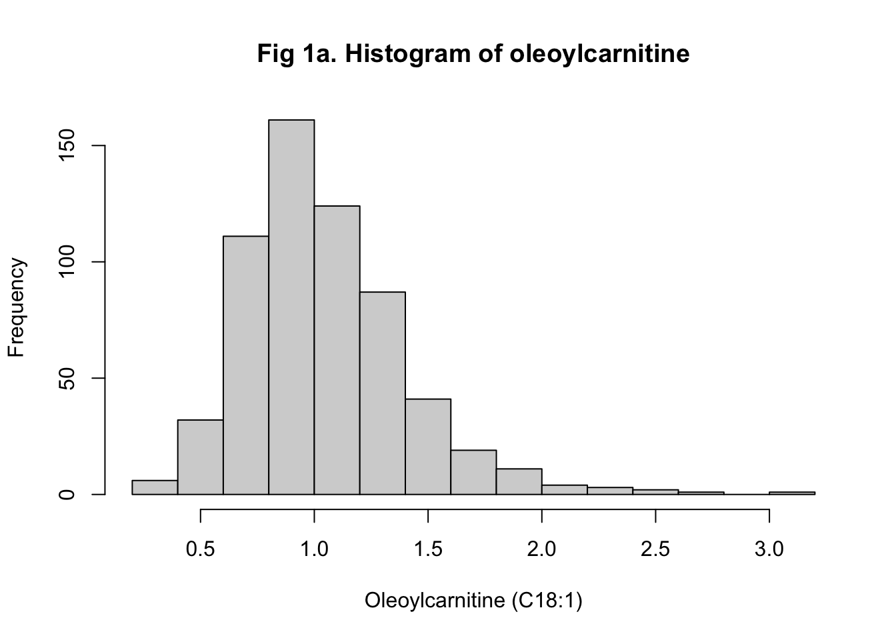
hist(var_proc_int$`oleoylcarnitine (C18:1)`, main = "Fig 1b. Histogram of INT-transformed oleoylcarnitine (C18:1))", xlab = "INT(Oleoylcarnitine (C18:1))")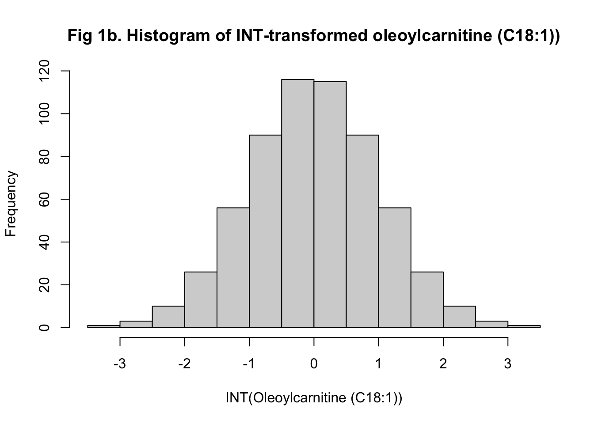
hist(var_proc_exp$`S-methylcysteine sulfoxide`, main = "Fig 2a. Histogram of S-methylcysteine sulfoxide", xlab = "S-methylcysteine sulfoxide")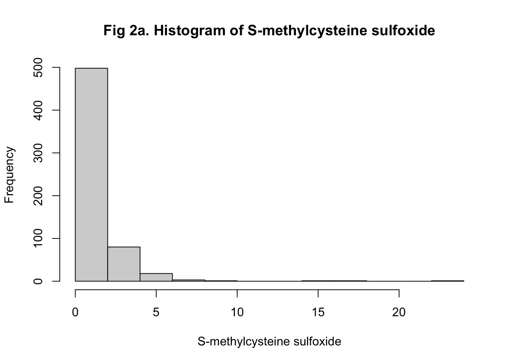
hist(var_proc_int$`S-methylcysteine sulfoxide`, main = "Fig 2b. Histogram of INT-transformed S-methylcysteine sulfoxide", xlab = "INT(S-methylcysteine sulfoxide)") 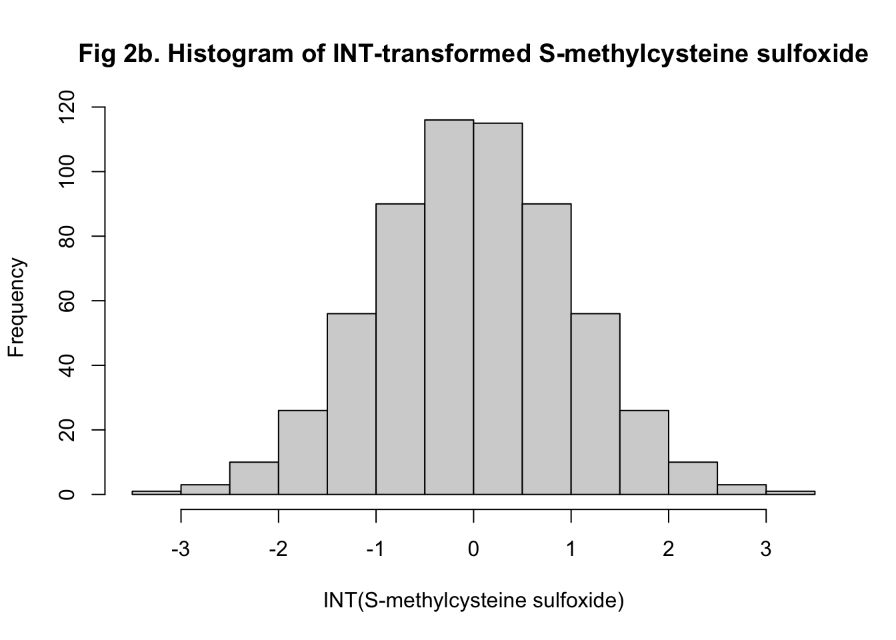
#Split data
set.seed(34324)
main_new <- cbind(main[,1:2], var_proc_int)
train_index <- createDataPartition(main_new$case, times = 1, p = 0.8, list = FALSE)
train_set <- main_new[train_index,]
test_set <- main_new[-train_index,]
#X and Y matrix
x_train <- as.matrix(train_set[,3:1424])
y_train <- factor(train_set$case)
x_test <- as.matrix(test_set[,3:1424])
y_test <- factor(test_set$case)#PCA
col_means <- colMeans(x_train)
pca <- prcomp(x_train)
s_pca_3 <- summary(pca)$importance[3,] ##69 pc
head(s_pca_3, 69)## PC1 PC2 PC3 PC4 PC5 PC6 PC7 PC8 PC9 PC10
## 0.09528 0.14187 0.17858 0.21450 0.24215 0.26855 0.29403 0.31393 0.33268 0.35060
## PC11 PC12 PC13 PC14 PC15 PC16 PC17 PC18 PC19 PC20
## 0.36595 0.37976 0.39264 0.40522 0.41732 0.42849 0.43910 0.44940 0.45886 0.46815
## PC21 PC22 PC23 PC24 PC25 PC26 PC27 PC28 PC29 PC30
## 0.47727 0.48587 0.49381 0.50149 0.50892 0.51619 0.52337 0.53013 0.53645 0.54261
## PC31 PC32 PC33 PC34 PC35 PC36 PC37 PC38 PC39 PC40
## 0.54863 0.55446 0.56017 0.56585 0.57135 0.57666 0.58171 0.58672 0.59164 0.59644
## PC41 PC42 PC43 PC44 PC45 PC46 PC47 PC48 PC49 PC50
## 0.60116 0.60573 0.61013 0.61444 0.61872 0.62298 0.62701 0.63098 0.63494 0.63877
## PC51 PC52 PC53 PC54 PC55 PC56 PC57 PC58 PC59 PC60
## 0.64255 0.64624 0.64986 0.65345 0.65694 0.66041 0.66380 0.66717 0.67048 0.67372
## PC61 PC62 PC63 PC64 PC65 PC66 PC67 PC68 PC69
## 0.67691 0.68005 0.68315 0.68620 0.68922 0.69224 0.69519 0.69808 0.70096#New PC predictors
pc <- 69
x_train_pc <- pca$x[,1:pc] #PCA + Logistic
glm_tmp <- as.data.frame(cbind(train_set$case, x_train_pc)) #Merge cases with PCs
glm_tmp <- glm_tmp %>% rename(case = V1)
fit_glm <- glm(case ~., data = glm_tmp, family = "binomial")
x_test_pc_pre <- sweep(x_test,2,col_means) %*% pca$rotation
x_test_pc <- x_test_pc_pre[,1:pc]
y_prob <- predict(fit_glm, as.data.frame(x_test_pc), type = "response")
y_pred_glm <- factor(ifelse(y_prob > 0.5, 1, 0))
confusionMatrix(y_pred_glm, y_test)## Confusion Matrix and Statistics
##
## Reference
## Prediction 0 1
## 0 58 8
## 1 7 47
##
## Accuracy : 0.875
## 95% CI : (0.8022, 0.9283)
## No Information Rate : 0.5417
## P-Value [Acc > NIR] : 5.161e-15
##
## Kappa : 0.7479
##
## Mcnemar's Test P-Value : 1
##
## Sensitivity : 0.8923
## Specificity : 0.8545
## Pos Pred Value : 0.8788
## Neg Pred Value : 0.8704
## Prevalence : 0.5417
## Detection Rate : 0.4833
## Detection Prevalence : 0.5500
## Balanced Accuracy : 0.8734
##
## 'Positive' Class : 0
## F_meas(y_pred_glm, y_test, beta = 2) #F_1 score with beta=2## [1] 0.8895706#ROC
roc_glm <- roc(as.factor(test_set$case), y_prob)
plot(roc_glm, print.thres="best", type = "line", print.auc = TRUE, legacy.axes = TRUE,
grid = TRUE, ylim = c(0,1), xlim = c(1,0), col = "Red", main = "Fig 3. ROC for PCA + Logistic") 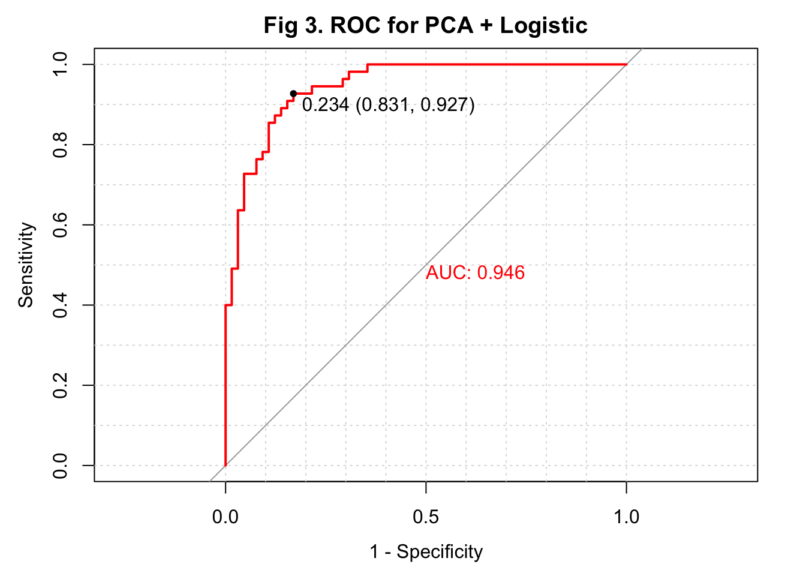
#PCA + KNN
set.seed(5436)
b <- 10
control_pca <- trainControl(method = "cv", number = b, p = .9)
train_pcaknn <- train(x_train_pc, y_train,
method = "knn",
tuneGrid = data.frame(k = seq(2,100,20)),
trControl = control_pca)
ggplot(train_pcaknn, highlight = TRUE) +
ggtitle("Fig 4a. Accuracy at different K values (PCA+KNN)")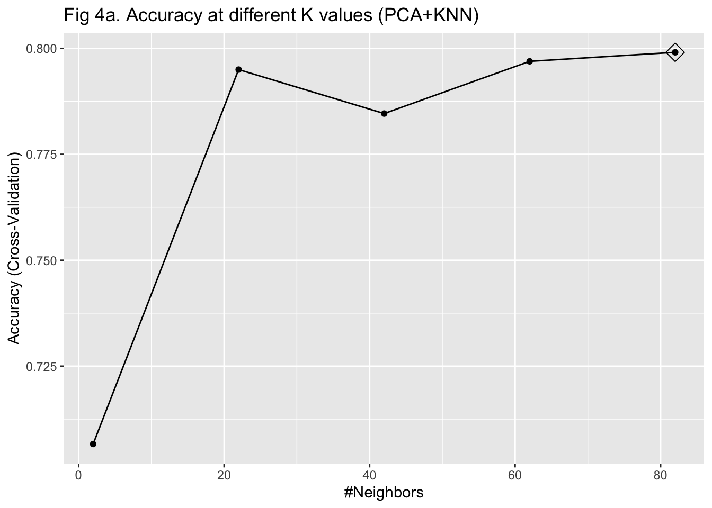
#Second attempt
set.seed(5432)
b <- 10
control_pca <- trainControl(method = "cv", number = b, p = .9)
train_pcaknn2 <- train(x_train_pc, y_train,
method = "knn",
tuneGrid = data.frame(k = seq(5,150,10)),
trControl = control_pca)
ggplot(train_pcaknn2, highlight = TRUE) +
ggtitle("Fig 4b. Accuracy at different K values (PCA+KNN, 2nd attempt)")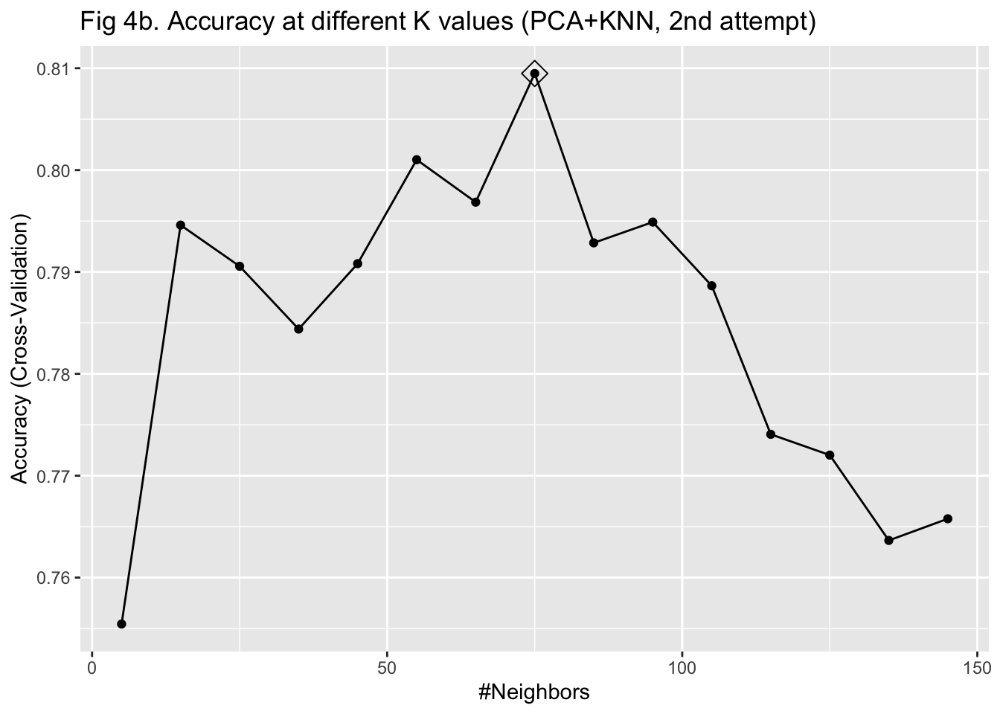
train_pcaknn2$bestTune ## k
## 8 75train_pcaknn2$results$Accuracy## [1] 0.7554422 0.7946003 0.7905612 0.7843963 0.7908163 0.8010204 0.7968537
## [8] 0.8094813 0.7928571 0.7948980 0.7886480 0.7740646 0.7720238 0.7636480
## [15] 0.7657738fit_pcaknn <- knn3(x_train_pc, y_train, k = train_pcaknn2$bestTune$k)
y_pred_pcaknn <- predict(fit_pcaknn, x_test_pc, type = "class")
y_pred_pcaknn_p <- predict(fit_pcaknn, x_test_pc, type = "prob")
confusionMatrix(y_pred_pcaknn, y_test)## Confusion Matrix and Statistics
##
## Reference
## Prediction 0 1
## 0 60 15
## 1 5 40
##
## Accuracy : 0.8333
## 95% CI : (0.7544, 0.8951)
## No Information Rate : 0.5417
## P-Value [Acc > NIR] : 1.512e-11
##
## Kappa : 0.6596
##
## Mcnemar's Test P-Value : 0.04417
##
## Sensitivity : 0.9231
## Specificity : 0.7273
## Pos Pred Value : 0.8000
## Neg Pred Value : 0.8889
## Prevalence : 0.5417
## Detection Rate : 0.5000
## Detection Prevalence : 0.6250
## Balanced Accuracy : 0.8252
##
## 'Positive' Class : 0
## F_meas(y_pred_pcaknn, y_test, beta = 2)## [1] 0.8955224#ROC
roc_pcaknn <- roc(as.factor(test_set$case), y_pred_pcaknn_p[, 2])
plot(roc_pcaknn, print.thres="best", type = "line", print.auc = TRUE, legacy.axes = TRUE,
grid = TRUE, ylim = c(0,1), col = "Red", main = "Fig 5. ROC for PCA + KNN")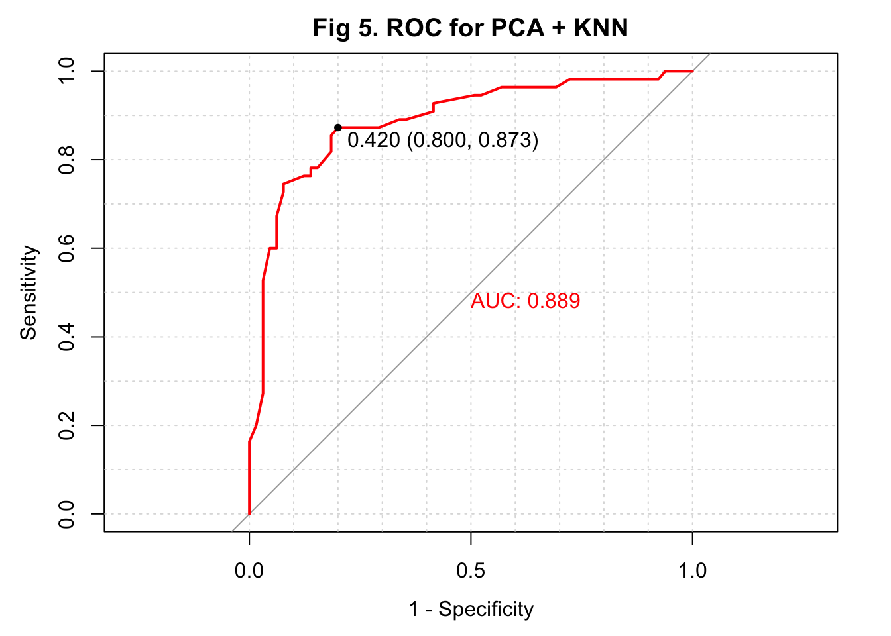
#KNN
set.seed(3245)
b <- 10
control_knn <- trainControl(method = "cv", number = b, p = .9)
train_knn <- train(x_train, y_train,
method = "knn",
tuneGrid = data.frame(k = seq(5,150,10)),
trControl = control_knn)
ggplot(train_knn, highlight = TRUE) +
ggtitle("Fig 6. Accuracy at different K values (KNN)")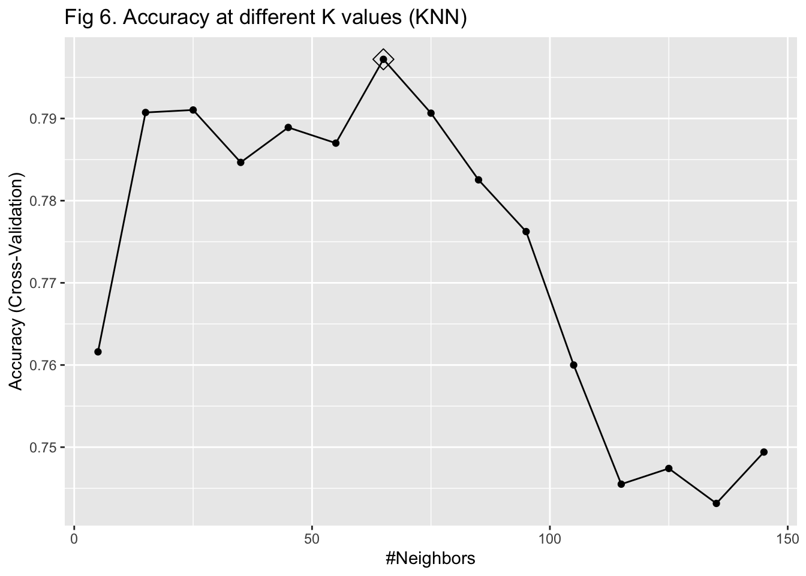
train_knn$bestTune ## k
## 7 65train_knn$results$Accuracy## [1] 0.7616026 0.7907340 0.7910371 0.7846577 0.7889112 0.7870016 0.7972038
## [8] 0.7906508 0.7825337 0.7762375 0.7599978 0.7454977 0.7474092 0.7431557
## [15] 0.7494057fit_knn <- knn3(x_train, y_train, k = train_knn$bestTune$k)
y_pred_knn <- predict(fit_knn, x_test, type = "class")
y_pred_knn_p <- predict(fit_knn, x_test, type = "prob")
confusionMatrix(y_pred_knn, y_test)## Confusion Matrix and Statistics
##
## Reference
## Prediction 0 1
## 0 61 20
## 1 4 35
##
## Accuracy : 0.8
## 95% CI : (0.7172, 0.8675)
## No Information Rate : 0.5417
## P-Value [Acc > NIR] : 3.087e-09
##
## Kappa : 0.588
##
## Mcnemar's Test P-Value : 0.0022
##
## Sensitivity : 0.9385
## Specificity : 0.6364
## Pos Pred Value : 0.7531
## Neg Pred Value : 0.8974
## Prevalence : 0.5417
## Detection Rate : 0.5083
## Detection Prevalence : 0.6750
## Balanced Accuracy : 0.7874
##
## 'Positive' Class : 0
## F_meas(y_pred_knn, y_test, beta = 2)## [1] 0.8944282#ROC
roc_knn <- roc(as.factor(test_set$case), y_pred_knn_p[, 2])
plot(roc_knn, print.thres="best", type = "line", print.auc = TRUE, grid = TRUE, legacy.axes = TRUE,
ylim = c(0,1), col = "Red", main = "Fig 7. ROC for KNN")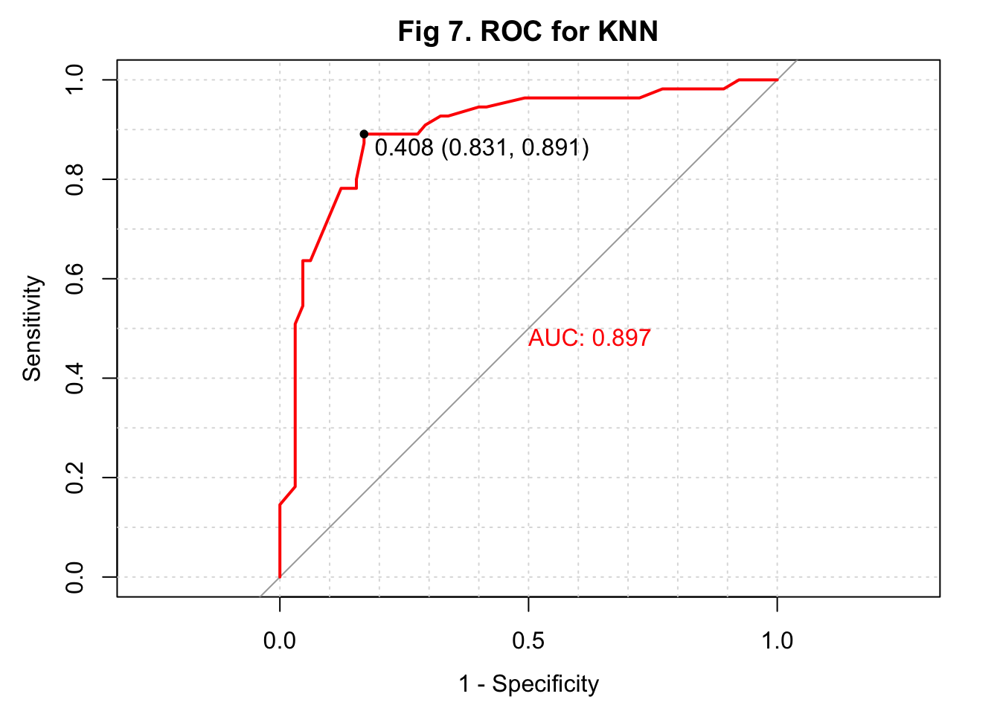
#Random forest
set.seed(4536)
b <- 5
control_rf <- trainControl(method="cv", number = b, p = .9)
train_rf <- train(x_train, y_train,
method = "rf",
ntree = 15,
trControl = control_rf,
tuneGrid = data.frame(mtry = seq(10, 1000, 100)))
ggplot(train_rf, highlight = TRUE) +
ggtitle("Fig 8a. Accuracy at different number of selected predictors")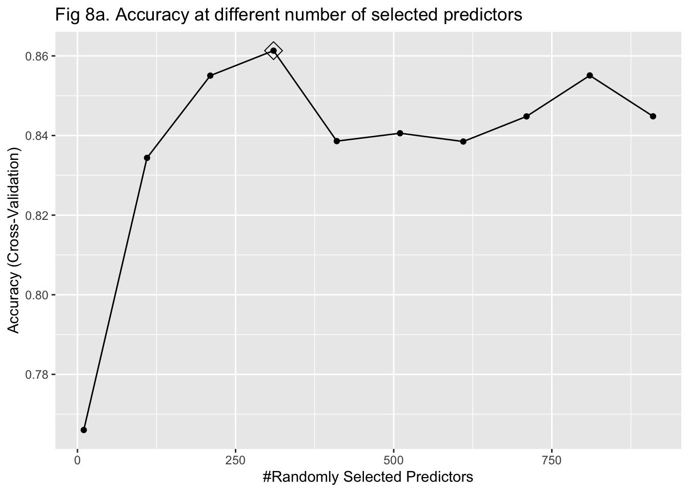
train_rf$bestTune## mtry
## 4 310train_rf$results$Accuracy## [1] 0.7660223 0.8343857 0.8550473 0.8613187 0.8385954 0.8405713 0.8384880
## [8] 0.8448024 0.8550902 0.8448239fit_rf <- randomForest(x_train, y_train,
mtry = train_rf$bestTune$mtry,
minNode = 10)
plot(fit_rf, main = "Fig 9a. Error by number of trees") 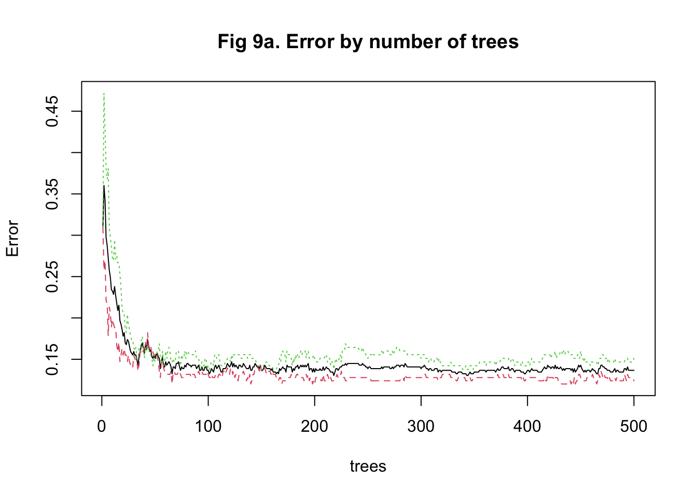
set.seed(6543)
b <- 5
control_rf <- trainControl(method="cv", number = b, p = .9)
train_rf2 <- train(x_train, y_train,
method = "rf",
ntree = 100,
trControl = control_rf,
tuneGrid = data.frame(mtry = seq(10, 1000, 100)))
ggplot(train_rf2, highlight = TRUE) +
ggtitle("Fig 8b. Accuracy at different number of selected predictors (2nd attempt)")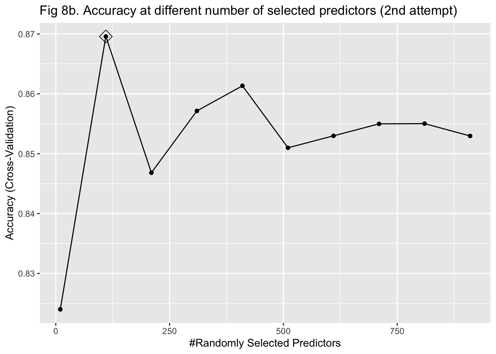
train_rf2$bestTune## mtry
## 2 110train_rf2$results$Accuracy## [1] 0.8239905 0.8695876 0.8468213 0.8571521 0.8613402 0.8509880 0.8529854
## [8] 0.8549828 0.8550258 0.8529639fit_rf2 <- randomForest(x_train, y_train,
mtry = train_rf2$bestTune$mtry,
minNode = 10)
plot(fit_rf2, main = "Fig 9b. Error by number of trees (2nd attempt)") 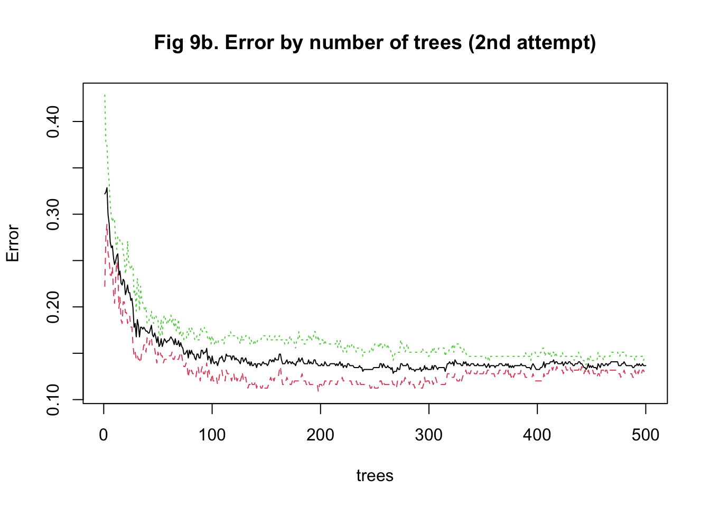
set.seed(232)
b <- 5
control_rf <- trainControl(method="cv", number = b, p = .9)
train_rf3 <- train(x_train, y_train,
method = "rf",
ntree = 100,
trControl = control_rf,
tuneGrid = data.frame(mtry = seq(10, 500, 20)))
ggplot(train_rf3, highlight = TRUE) +
ggtitle("Fig 8c. Accuracy at different number of selected predictors (3rd attempt)")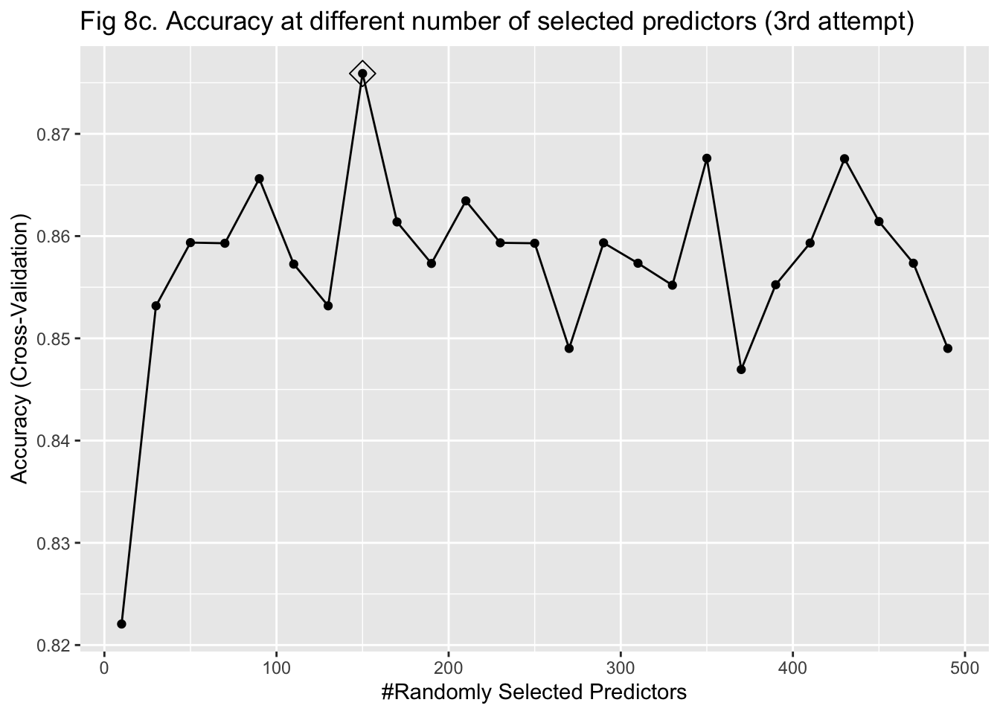
train_rf3$bestTune## mtry
## 8 150train_rf3$results$Accuracy## [1] 0.8220576 0.8531787 0.8593643 0.8592998 0.8656143 0.8572595 0.8531787
## [8] 0.8759021 0.8613832 0.8573239 0.8634450 0.8593428 0.8592998 0.8490120
## [15] 0.8593428 0.8573454 0.8551976 0.8676117 0.8469502 0.8552405 0.8593213
## [22] 0.8675687 0.8614261 0.8573454 0.8490120fit_rf3 <- randomForest(x_train, y_train,
mtry = train_rf3$bestTune$mtry,
minNode = 10)
plot(fit_rf3, main = "Fig 9c. Error by number of trees (3rd attempt)") 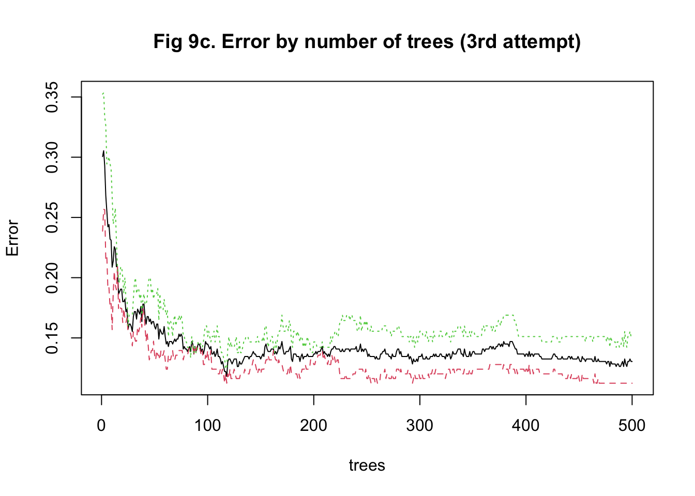
y_pred_rf <- predict(fit_rf3, x_test, type = "class")
y_pred_rf_p <- predict(fit_rf3, x_test, type = "prob")
confusionMatrix(y_pred_rf, y_test)## Confusion Matrix and Statistics
##
## Reference
## Prediction 0 1
## 0 60 6
## 1 5 49
##
## Accuracy : 0.9083
## 95% CI : (0.8419, 0.9533)
## No Information Rate : 0.5417
## P-Value [Acc > NIR] : <2e-16
##
## Kappa : 0.8151
##
## Mcnemar's Test P-Value : 1
##
## Sensitivity : 0.9231
## Specificity : 0.8909
## Pos Pred Value : 0.9091
## Neg Pred Value : 0.9074
## Prevalence : 0.5417
## Detection Rate : 0.5000
## Detection Prevalence : 0.5500
## Balanced Accuracy : 0.9070
##
## 'Positive' Class : 0
## F_meas(y_pred_rf, y_test, beta = 2)## [1] 0.9202454roc_rf <- roc(as.factor(test_set$case), y_pred_rf_p[, 2])
plot(roc_rf, print.thres="best", type = "line", print.auc = TRUE, grid = TRUE, legacy.axes = TRUE,
ylim = c(0,1), col = "Red", main = "Fig 10. ROC for RF")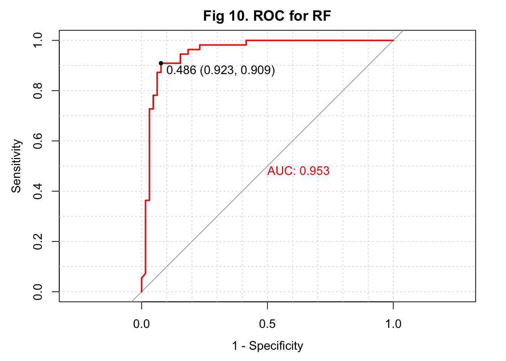
#Ensemble
p_knn <- y_pred_knn_p
p_rf <- y_pred_rf_p / rowSums(y_pred_rf_p)
p_pcaknn <- y_pred_pcaknn_p
p_glm <- as.matrix(cbind(1-y_prob, y_prob))
colnames(p_glm) <- c(0, 1)
p <- (p_rf + p_knn)/2
y_pred <- factor(apply(p, 1, which.max)-1)
confusionMatrix(y_pred, y_test)## Confusion Matrix and Statistics
##
## Reference
## Prediction 0 1
## 0 60 9
## 1 5 46
##
## Accuracy : 0.8833
## 95% CI : (0.812, 0.9347)
## No Information Rate : 0.5417
## P-Value [Acc > NIR] : 8.505e-16
##
## Kappa : 0.7637
##
## Mcnemar's Test P-Value : 0.4227
##
## Sensitivity : 0.9231
## Specificity : 0.8364
## Pos Pred Value : 0.8696
## Neg Pred Value : 0.9020
## Prevalence : 0.5417
## Detection Rate : 0.5000
## Detection Prevalence : 0.5750
## Balanced Accuracy : 0.8797
##
## 'Positive' Class : 0
## F_meas(y_pred, y_test, beta = 2)## [1] 0.9118541roc_es <- roc(as.factor(test_set$case), p[, 2])
plot(roc_es, print.thres="best", type = "line", print.auc = TRUE, grid = TRUE, legacy.axes = TRUE,
ylim = c(0,1), col = "Red", main = "Fig 11. ROC for Ensemble of RF & KNN")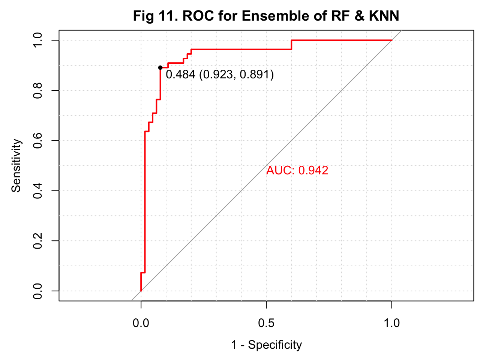
#Combine ROCs
ggroc(list(roc_glm, roc_pcaknn, roc_knn, roc_rf, roc_es), legacy.axes = TRUE) +
theme_linedraw() +
ggtitle("Fig 12. ROCs for all algorithms") +
geom_segment(aes(x = 0, xend = 1, y = 0, yend = 1), color="grey", linetype="dashed") +
scale_colour_discrete(labels = c("PCA + Logistic", "PCA + KNN", "KNN", "Random forest", "Ensemble")) +
labs(color = "Models")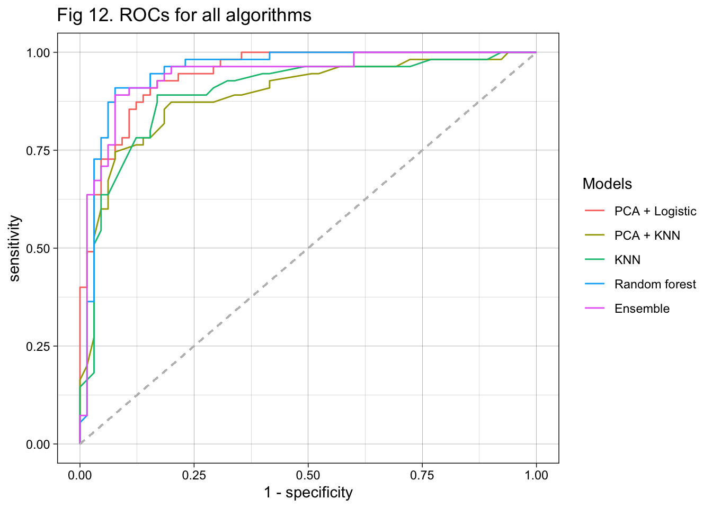
#Create a summary table
summary <- data.frame()
summary[1,1] <- round(confusionMatrix(y_pred_glm, y_test)$byClass[1], 3)
summary[1,2] <- round(confusionMatrix(y_pred_glm, y_test)$byClass[2], 3)
summary[1,3] <- round(confusionMatrix(y_pred_glm, y_test)$overall["Accuracy"], 3)
summary[1,4] <- round(F_meas(y_pred_glm, y_test, beta = 2), 3)
summary[1,5] <- round(roc_glm$auc, 3)
summary[2,1] <- round(confusionMatrix(y_pred_pcaknn, y_test)$byClass[1], 3)
summary[2,2] <- round(confusionMatrix(y_pred_pcaknn, y_test)$byClass[2], 3)
summary[2,3] <- round(confusionMatrix(y_pred_pcaknn, y_test)$overall["Accuracy"], 3)
summary[2,4] <- round(F_meas(y_pred_pcaknn, y_test, beta = 2), 3)
summary[2,5] <- round(roc_pcaknn$auc, 3)
summary[3,1] <- round(confusionMatrix(y_pred_knn, y_test)$byClass[1], 3)
summary[3,2] <- round(confusionMatrix(y_pred_knn, y_test)$byClass[2], 3)
summary[3,3] <- round(confusionMatrix(y_pred_knn, y_test)$overall["Accuracy"], 3)
summary[3,4] <- round(F_meas(y_pred_knn, y_test, beta = 2), 3)
summary[3,5] <- round(roc_knn$auc, 3)
summary[4,1] <- round(confusionMatrix(y_pred_rf, y_test)$byClass[1], 3)
summary[4,2] <- round(confusionMatrix(y_pred_rf, y_test)$byClass[2], 3)
summary[4,3] <- round(confusionMatrix(y_pred_rf, y_test)$overall["Accuracy"], 3)
summary[4,4] <- round(F_meas(y_pred_rf, y_test, beta = 2), 3)
summary[4,5] <- round(roc_rf$auc, 3)
summary[5,1] <- round(confusionMatrix(y_pred, y_test)$byClass[1], 3)
summary[5,2] <- round(confusionMatrix(y_pred, y_test)$byClass[2], 3)
summary[5,3] <- round(confusionMatrix(y_pred, y_test)$overall["Accuracy"], 3)
summary[5,4] <- round(F_meas(y_pred, y_test, beta = 2), 3)
summary[5,5] <- round(roc_es$auc, 3)
rownames(summary) <- c("PCA + Logistic", "PCA + KNN", "KNN", "Random forest", "Ensemble of KNN & RF")
colnames(summary) <- c("Sensitivity", "Specificity", "Overall accuracy", "F_1 score", "AUC")
summary %>%
kbl(caption = "Table 1. Summary of performance measures for all algorithms") %>%
kable_material(c("striped")) | Sensitivity | Specificity | Overall accuracy | F_1 score | AUC | |
|---|---|---|---|---|---|
| PCA + Logistic | 0.892 | 0.855 | 0.875 | 0.890 | 0.946 |
| PCA + KNN | 0.923 | 0.727 | 0.833 | 0.896 | 0.889 |
| KNN | 0.938 | 0.636 | 0.800 | 0.894 | 0.897 |
| Random forest | 0.923 | 0.891 | 0.908 | 0.920 | 0.953 |
| Ensemble of KNN & RF | 0.923 | 0.836 | 0.883 | 0.912 | 0.942 |